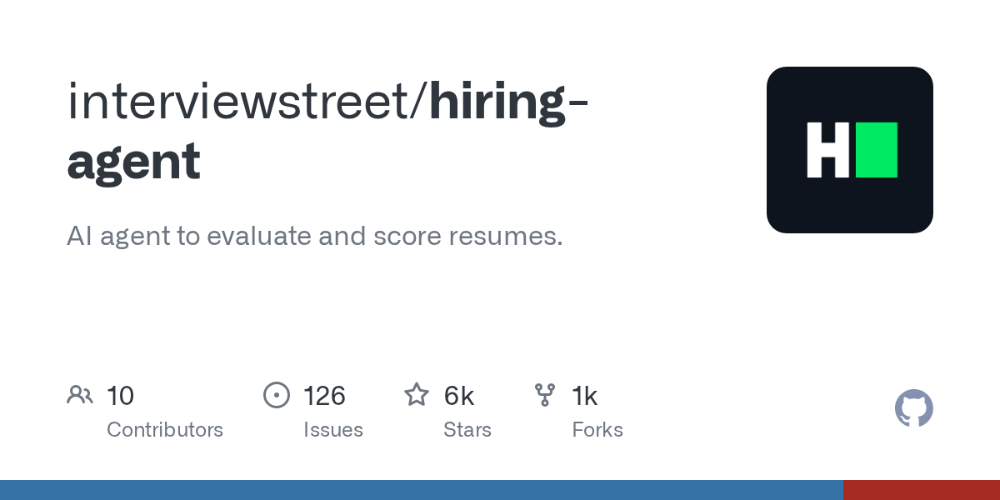

Recently, there has been a rise in the usage of AI agents in many fields, including hiring. These AI tools have made their way into many hiring departments, and are now able to score resumes and rank candidates. With people, you can change their impression of you with the right words. So, I wanted to see if you can use those same tricks on an AI hiring agent; are you able to raise your score by just how you write, without changing a single fact?
The setup
I used the system prompt from HiringAgent, an AI resume screener that was recently open-sourced.

The prompt tells the model to act as a technical recruiter and rate a resume out of 120, split across four categories: open source (up to 35 points), personal projects (up to 30), work experience (up to 25), and technical skills (up to 10), plus up to 20 bonus points. It also carries a lot of baked-in rules — personal GitHub repos don't count as open source (only contributions to other people's projects do), basic projects like to-do apps score near zero while complex ones score in the 20s, and programs like Google Summer of Code earn bonus points.
I had several resume versions with the details listed below.
- R0 — The plain, honest baseline resume. It's meant to read as a standard resume.
- R1–R4 — the same facts with steadily more adjectives per version.
- RM — A "mirror" version. It specifically mirrors this system prompt, which is meant to see if using terms and ideas used in the system prompt net higher scores.
- An "optimized" version — This version unlike the mirror version is aimed for general AI hiring agents and not targeting this specific system prompt.
The resume's scores were recorded by running each resume through the reviewer 10 times and logging each run. The agent is an LLM, not a fixed formula so the scores varied on each run and between batches.
What I expected
I expected that using adjectives could slightly tip the model to rate the resume higher. After a certain density of adjectives, eventually the model would catch on to the unnaturalness of the writing, and start adding deductions and viewing the resume more negatively.
What actually happened
The density of verbage didn't make much of a difference. For most runs, it hardly changed the score from the baseline. The lightest and densest resumes landed within a point of each other, and I couldn't confidently say they beat the baseline. However, two versions did "substantially" beat the baseline. The mirror, and R3.
Mean total score by resume version
Out of 120, ten runs each. R0 is the honest baseline.
| Version | Mean score | Δ vs. R0 |
|---|---|---|
| R0 · baseline | 77.1 | — |
| R1 | 76.2 | −0.9 |
| R2 | 77.3 | +0.2 |
| R3 | 81.0 | +3.9 |
| R4 | 76.8 | −0.3 |
| RM · mirror | 79.3 | +2.2 |
| RO · optimized | 76.7 | −0.4 |
When I scored the identical baseline twice, the two batches came back at 77.1 and 74.9. The same resume was measured twice, but both batches returned different numbers. The same went for R3. After seeing how high the score was, I reran it and got an even higher score.
I first thought that the tool was unreliable. But after looking closer at the categorical scores, I saw that most categories only move by a single point every run. Every category was reasonably similar between runs, which means that the system prompt was doing its job. The prompt could still differentiate a weak candidate from a strong one.
By looking into the system prompt, it's easy to see why this occurs. The prompt defines a "low score" by the range 1-9 points, while it classifies a "high score" by 20-30. So it's not unreasonable for the model to have varying ranges from run to run, because the prompt doesn't clearly define the difference between a 3 and an 8, both are classified as weak. This also made it clear for my experiment. If I were to accurately see if I could change the model's score, then I would have to measure it hundreds if not 1000s of times. And judging from my results, the scores would barely pass the baseline in any meaningful way considering one more "strong project" is 20-30 points.
The variation wasn't even either. The noisiest judgments were bonus points and open-source credit, while the skills list hardly budged. This could possibly be due to how the AI perceived trustworthiness. From the AI's perspective, a candidate is much more likely to embellish details about their own projects, but much less likely to do so for projects owned by other people.
Surprisingly, my "optimized" resume didn't beat the baseline at all.
The agent takes in vocabulary that isn't in the baseline and interprets it. "production-minded" appears only in the reworded resumes, yet the screener repeats it back, in its own words, as a strength:
outputs/r3/second_run/run_08.txt:16 — key_strengths
Demonstrates independent, production-minded engineering judgment uncommon for a second-year student
This demonstrated that the adjectives weren't skipped over and made a difference in the results.
So can you game it?
My experiment was far from conclusive due to the small sample size. But from what I could gather, changing the words and adding adjectives doesn't meaningfully change the resume score. My largest results on average upped the score by 5-6 points, while one strong project could net you an extra 20 or 30 points. However, sometimes even the smallest factor can make a big difference. In comparison to the points gained by one big project, 6 points doesn't look like much, but side by side with another candidate, 6 points can make all the difference.